library(tidyverse)
library(ggplot2)
library(readxl)
library(summarytools)
library(ggrepel)
library(viridis)
library(GGally)
library(hrbrthemes)
knitr::opts_chunk$set(echo = TRUE, warning=FALSE, message=FALSE)Final Project Assignment : Keith Martin
final_Project_assignment_1
final_project_data_description
Project & Data Description
Part 1. Introduction
Since California first legalized medical use of Marijuana in 1996, there have been twenty two states that have legalized Marijuana use in some capacity. As the prohibition fades away, the mad dash to enter into the industry began. Politicians and advocates argued that those who we’re most heavily impacted by the “War on Drugs” should be considered for the first round of licensing. Simultaneously, large companies with business ties in the industry lobbied for licensing as well.
After decades of decriminalization, states now have to decide who can distribute Marijuana in their state. The data used in this paper was gathered from Pennsylvania’s phases 1 and 2 dispensary application report cards from PADOH in 2016. The PADOH evaluation was used by Pennsylvania state officials as an application process that resulted in a score out of 800 points. The 800 points were broken down into 16 categories each broken down into individual scores.
Research Questions
In this paper, I want to answer the following questions:
Does having higher capital score contribute to a higher chance in receiving a license?
Do any other factors have a similar impact on receiving a license if final scores are similar?
Data
This data set was gathered from 387 applications submitted in Pennsylvania (2016) from various companies attempting to get a license to operate a dispensary in the state.
Each case is a company (sometimes several applications from the same company) and their respective scores across 16 categories. The categories are diversity plan, operational time table, qualifications, security transportation, storage, labeling, inventory, diversion, sanitation, record keeping, history, capital, community, site plan and personalid.
These scores are then added up for a total score, the max being 800. In theory, the higher your total score, the higher chance you will receive a license.
The categories I will be focusing on are capital, qualifications, security and diversity plan.
For visualization, I will use scatterplots, boxplots and a correlogram to visualize any potential patterns between specific categories and whether or not they received a license.
For the purpose of this paper, we will be focusing on the correlation and potential patterns. However, regression will not be used. We will not prove statistical significance, but to use these observations as inspiration for further future research.
N/A values will be removed because they are random throughout the data set and incomplete application packages were not considered for a license. Therefore any company that did not have an N/A in any category, would not have been considered for a license.
Hypothesis
After reviewing the data, it becomes evident that the company with the higher scores do not always receive licenses. Some with lower scores receive them and some with higher scores in specific categories receive licenses despite having a lower total score.
I hypothesize that if you we’re to separate the higher scores in the capital category you would find that companies with more capital will receive licenses even if their overall score is not the highest.
Additionally, I believe that the diversity plan will show lower levels of correlation than capital.
Read in the Data
PA_Dispensary_License_Data_tab <- read_excel("~/Downloads/PA Dispensary License Data.tab.xlsx")
head(PA_Dispensary_License_Data_tab, 10)I have included a header with the first 10 companies that applied for the license. From this information, you can see the various categories that are used to calculate the final score.
colnames(PA_Dispensary_License_Data_tab) [1] "phase" "dispensarynumber" "name"
[4] "diversityplan" "operationaltimetable" "qualifications"
[7] "security" "transportation" "storage"
[10] "labeling" "inventory" "diversion"
[13] "sanitation" "recordkeeping" "history"
[16] "capital" "community" "siteplan"
[19] "personalid" "awarded" "licensed"
[22] "dispensaries" nrow(PA_Dispensary_License_Data_tab)[1] 387ncol(PA_Dispensary_License_Data_tab)[1] 22There are 22 total columns and a 387 total rows. A total of 387 companies applied for a license in 2016 in phase 1 of 2016.
PA_Dispensary_License_Condensed<-PA_Dispensary_License_Data_tab %>%
select(name, diversityplan, qualifications, security, capital,licensed, awarded)
head(PA_Dispensary_License_Condensed, 10)I grouped the data set by the specific categories I want to focus on. These are the categories that are going to be used for the bivariate analyses below.
Mutate
Since the licensed data was originally logged as 0 for companies that did not receive a license and 1 for companies that received a license, I needed to mutate the values to string format. This allows for clearer visualizations.
PA_Dispensary_License_Mutated<-PA_Dispensary_License_Condensed%>%
mutate(licensed = ifelse(licensed==0, "Unlicensed", "Licensed"))Summary Statistics
Diversity Plan Statistics:
Figure 1
### Summary Statistics for Diversity Plan Licensed v. Unlicensed
PA_Dispensary_License_Mutated%>%
group_by(licensed)%>%
summarise(
sd_diversity = sd (diversityplan, na.rm=TRUE),
max_diversity = max(diversityplan, na.rm = TRUE),
min_diversity = min(diversityplan, na.rm = TRUE),
avg_diversity = mean (diversityplan, na.rm = TRUE),
med_diversity = median(diversityplan, na.rm = TRUE))The table in Figure 1 lists the mean, standard deviation, median, min and max for the diversity scores. As you can see on average, licensed dispensaries had a score of 54.3, while unlicensed had an average score of 43.5. The median shared similar results. The median score for licensed dispensaries was 53.5 and unlicensed dispensaries had a median score of 40. The most interesting observation based on the summary statistics is the maximum for both unlicensed dispensaries and licensed dispensaries was both 75. That is the highest you could score in this category. This shows that even dispensaries that received the highest possible score in regards to diversity plan, did not always receive a license.
In addition to the summary statistics, I included a box plot with underlying violin plots to further describe the distribution and statistics.
Figure 2
###Box and Violin Combined for Diversity and Awarded
ggplot(PA_Dispensary_License_Mutated, aes(diversityplan,
y= awarded, fill = licensed)) +
geom_violin(width=1.4) +
geom_boxplot(width=0.1, color="grey", alpha=0.2) +
scale_fill_viridis(discrete = TRUE) +
theme_ipsum() +
theme(
legend.position="none",
plot.title = element_text(size=11)
)+
labs(title = "Diversity Score for License", x="Diversity Plan Score", y="Awarded Score")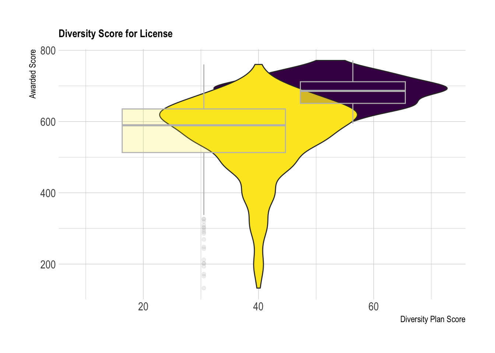
The visualization in Figure 2 builds on the results from the above summary statistics. As you can see from the box plots, the range of the unlicensed dispensaries (Yellow) encompasses the majority of the range from licensed dispensaries (Purple). Additionally, there is a significant amount of overlap of the violin plots. This suggests that there are a considerable amount of scores that overlap that either received or did not receive a license. There is no clear patterns.
Qualification Statistics:
Figure 3
###Summary Statistics for Qualifications and Licensed
PA_Dispensary_License_Mutated%>%
group_by(licensed)%>%
summarise(
sd_qual = sd (qualifications, na.rm=TRUE),
max_qual = max(qualifications, na.rm = TRUE),
min_qual = min(qualifications, na.rm = TRUE),
avg_qualification = mean (qualifications, na.rm = TRUE),
med_qualification = median(qualifications, na.rm = TRUE))Figure 3 is the summary statistics for the qualification scores for unlicensed and licensed dispensaries. As you can see, the average scores are much closer compared to Figure 1. The average qualification score for licensed dispensaries was 34.8 and the the median score is 34.9. While the average qualification score for unlicensed dispensaries is 30.2 and the median score is 30.8. Additionally, the standard deviation(Licensed:3.37 Unlicensed 6.19) is significantly smaller than the standard deviation of Diversity score listed in Figure 1(Licensed:12.3 Unlicensed:15.3). Based on these results, there should be a tighter distribution when comparing the qualification points between licensed and unlicensed dispensaries.
Figure 4
ggplot(PA_Dispensary_License_Mutated, aes(qualifications,
y= awarded, fill = licensed)) +
geom_violin(width=1.4) +
geom_boxplot(width=0.1, color="grey", alpha=0.2) +
scale_fill_viridis(discrete = TRUE) +
theme_ipsum() +
theme(
legend.position="none",
plot.title = element_text(size=11)
)+
labs(title = "Qualification Score for License", x="Qualification Score", y="Awarded Score")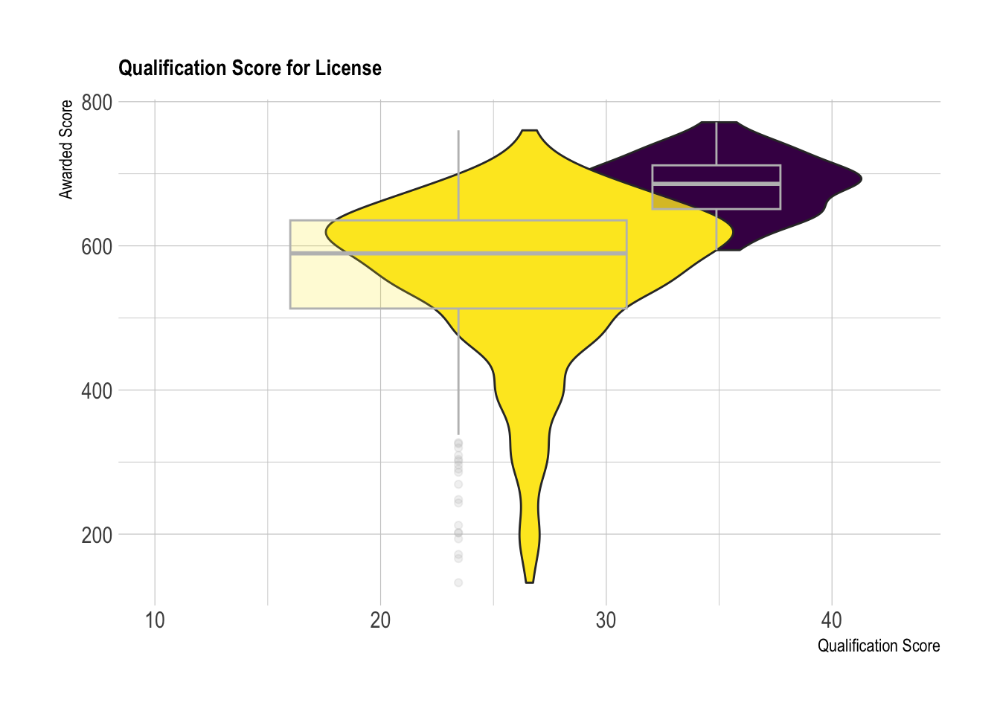
The box plot and violin plots in figure 4 further confirms the observations made in the summary statistics. As you can see, there is significantly less overlap in qualification scores across the X axis.
Security Statistics: Figure 5:
### Summary Statistics for Security and Licensed
PA_Dispensary_License_Mutated%>%
group_by(licensed)%>%
summarise(
sd_security = sd (security, na.rm=TRUE),
max_security = max(security, na.rm = TRUE),
min_security = min(security, na.rm = TRUE),
avg_security = mean (security, na.rm = TRUE),
med_security = median(security, na.rm = TRUE))Figure 5 details the summary statistics of the security category. The maximum possible points that could be achieved in this category was 80. In this case, the average scores and the median scores are the same for Licensed dispensaries. For unlicensed dispensaries, the median (60.3) was slightly higher than the average score(57.8). Based on the summary statistics, I expect there to be a more distinguishable pattern between the security score, the total points awarded and whether or not they received a license.
Figure 6:
ggplot(PA_Dispensary_License_Mutated, aes(security,
y= awarded, fill = licensed)) +
geom_violin(width=1.4) +
geom_boxplot(width=0.1, color="grey", alpha=0.2) +
scale_fill_viridis(discrete = TRUE) +
theme_ipsum() +
theme(
legend.position="none",
plot.title = element_text(size=11)
)+
labs(title = "Average Security Score for License", x="Security Score", y="Awarded Score")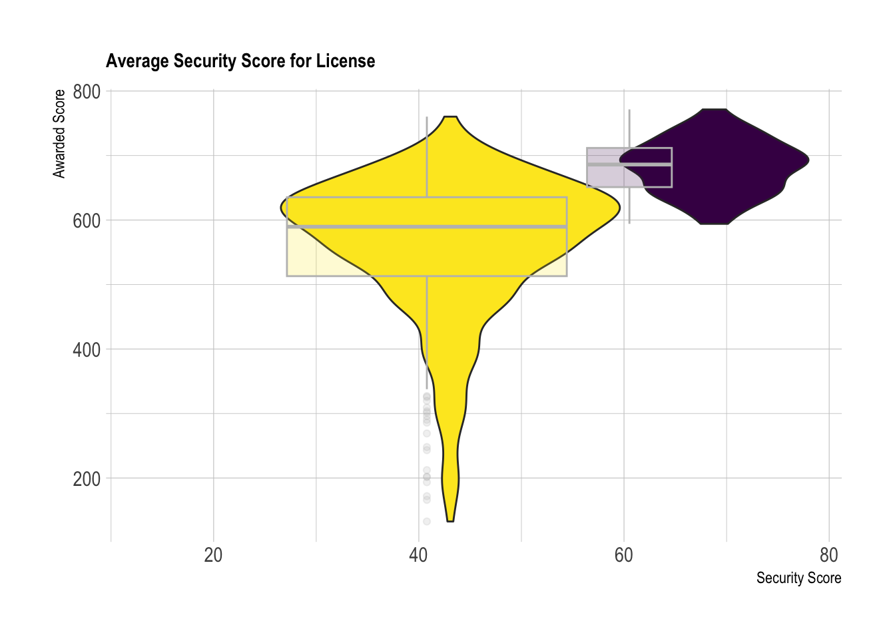
As you can see in Figure 7, there is noticeably less overlap on the violin plots across the x-axis. This visualization shows a clear relationship between the security score and the licensing outcome. This category will require further visualization and analysis before we can conclude there is a pattern.
Capital Statistics:
Figure 7
###Summary Statistics for Capital and Licensed
PA_Dispensary_License_Mutated%>%
group_by(licensed)%>%
summarise(
sd_capital = sd (capital, na.rm=TRUE),
max_capital = max(capital, na.rm = TRUE),
min_capital = min(capital, na.rm = TRUE),
avg_capital = mean (capital, na.rm = TRUE),
med_capital = median(capital, na.rm = TRUE))Figure 7 shows the summary statistics for capital scores between licensed and unlicensed dispensaries. The notable observations are that the average licensed score(62.6) and the median licensing score (62.7) are almost the same. This suggests the violin plots will have a similar distribution to that observed with the security score.
Figure 8
ggplot(PA_Dispensary_License_Mutated, aes(capital,
y= awarded, fill = licensed)) +
geom_violin(width=1.4) +
geom_boxplot(width=0.1, color="grey", alpha=0.2) +
scale_fill_viridis(discrete = TRUE) +
theme_ipsum() +
theme(
legend.position="none",
plot.title = element_text(size=11)
)+
labs(title = "Capital Score for License", x="Capital Score", y="Awarded Score")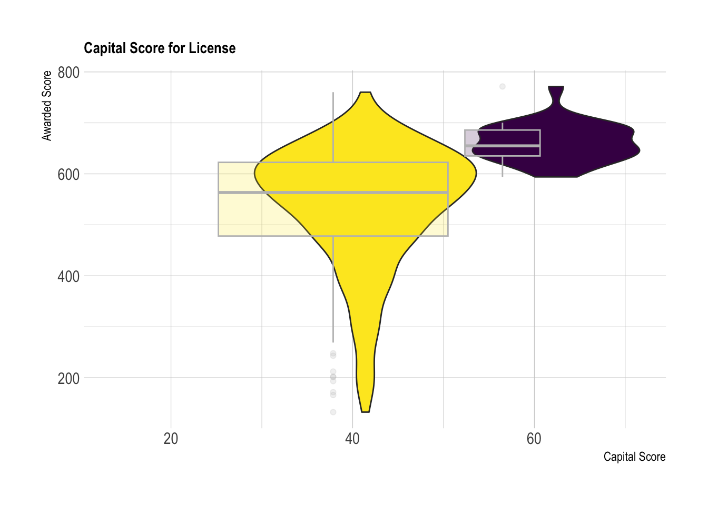
Like Figure 6, there is less overlap between the capital score across the x-axis. This observation suggests that there is a pattern between a higher capital score and receiving a license. This hints at a possible correlation between the capital score and licensing outcome.
Total Awarded: Figure 9
###Total Awarded and Licensed Summary Stats
PA_Dispensary_License_Mutated%>%
group_by(licensed)%>%
summarise(
sd_awarded = sd (awarded, na.rm=TRUE),
max_awarded = max(awarded, na.rm = TRUE),
min_awarded = min(awarded, na.rm = TRUE),
avg_awarded = mean (awarded, na.rm = TRUE),
med_awarded = median(awarded, na.rm = TRUE))As you can see from the “min awarded” in Figure 9, the lowest score that received a license was 594, however, the highest score that did not receive a license was 760. This further shows evidence that the total score awarded is not the sole factor in whether or not a company receives a dispensary license. Additionally, the maximum for licensed dispensaries was 772 and the max for unlicensed dispensaries was 760. This hints at the fact that the higher the total points awarded does not necessarily result in obtaining a license. However, it is worth noting that the average licensed dispensary receives a score over 120 points higher than dispensaries that did not receive their license.
Figure 10
ggplot(PA_Dispensary_License_Mutated, aes(licensed,
y= awarded, fill=licensed)) +
geom_violin(width=1.4)+
geom_boxplot(width=0.1, color="black", alpha=0.2)+
labs(title = "Box Plot of Total Points Awarded", x= "Licensing Outcome", y="Total Points Awarded")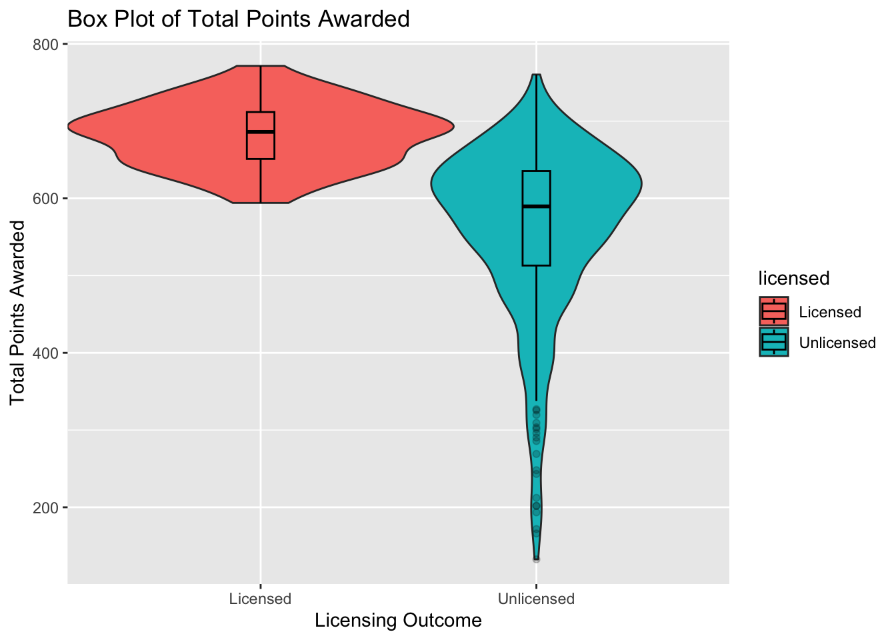
Figure 10 further displays the overlap in total awarded points in dispensaries that received a license and those that did not. As you can see by the underlying violin plot, there noticeable overlap in scores.
I focused on approximately 5 different categories. Specifically, I focused on name, diversity plan, qualifications, security, capital, licensed, awarded. The reason we focused on these categories is because I believe these are the most important scores when determining whether or not a company will receive a license.
Next, I analyzed Scatterplot graphs to further investigate if there are patterns between categories. Additionally, I summarized the results with a correlogram that calculated the levels of correlation between the grouped categories.
Visualization
I decided to include an outlier function to list any outiers in the scatter plot. After the outliers were removed, I separated the licensed dispensaries from the licensed dispensaries using a facet wrap to further analyze any potential patterns.
Capital vs. Awarded
### Outlier Function
is_outlier <- function(x)
return(x < quantile(x, 0.25, na.rm=TRUE) - 1.5 * IQR(x, na.rm=TRUE) | x > quantile(x, 0.75, na.rm=TRUE) + 1.5 * IQR(x, na.rm=TRUE))Figure 11
### attempted outlier function on Scatterplot
PA_Dispensary_License_Mutated%>%
mutate(outlier_capital = is_outlier(capital),
outlier_lab = if_else(outlier_capital, name, NA))%>%
ggplot(aes(x=capital, y=awarded, col = licensed)) +
geom_point() +
geom_text_repel(aes(label=outlier_lab), col="red")+
scale_color_discrete(name="Licensed")+
labs(title= "Scatterplot of Capital and Total Points Awarded", x= "Capital Score", y = "Total Points Awarded")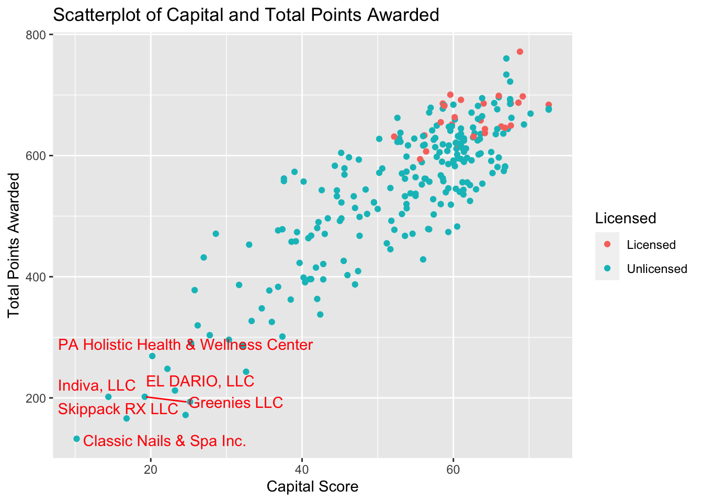
As you can see from the general shape of Figure 11, there seems to be a distinct correlation between the capital score and licensing outcome when compared to the total points awarded.
Figure 12
###Facet Wrap Graph Capital
ggplot(PA_Dispensary_License_Mutated, aes(x=capital, y=awarded, col = licensed)) +
geom_point()+
geom_smooth()+
theme_minimal()+
scale_x_continuous(limits = c(40, 80))+
labs(title= "Scatterplot of Capital and Total Points Awarded", x= "Capital Score", y = "Total Points Awarded")+
scale_color_discrete(name="Licensed")+
facet_wrap(vars(licensed))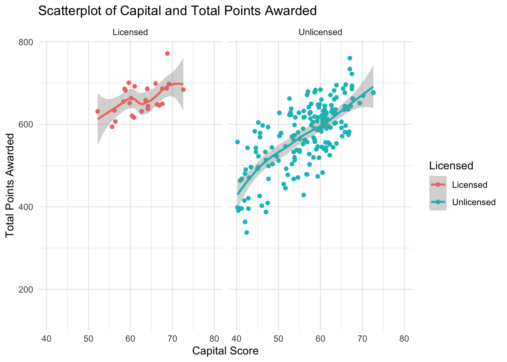
In figure 12, you will notice that there is a noticeable positive correlation for both licensed and unlicensed dispensaries. It is worth noting that there is a strong positive correlation from unlicensed dispensaries compared to the dispensaries that received licenses. This is likely due to the fact that are simply significantly more dispensaries that did not receive a license.
Diversity vs. Total Points Awarded
Figure 13
###Diversity scatterplot
PA_Dispensary_License_Mutated%>%
mutate(outlier_diversity = is_outlier(diversityplan),
outlier_lab = if_else(outlier_diversity, name, NA))%>%
ggplot(aes(x=diversityplan, y=awarded, col = licensed)) +
geom_point()+
scale_color_discrete(name="Licensed")+
labs(title= "Scatterplot of Diversity and Total Points Awarded", x= "Diversity Score", y = "Total Points Awarded")+
geom_text_repel(aes(label=outlier_lab), col="red")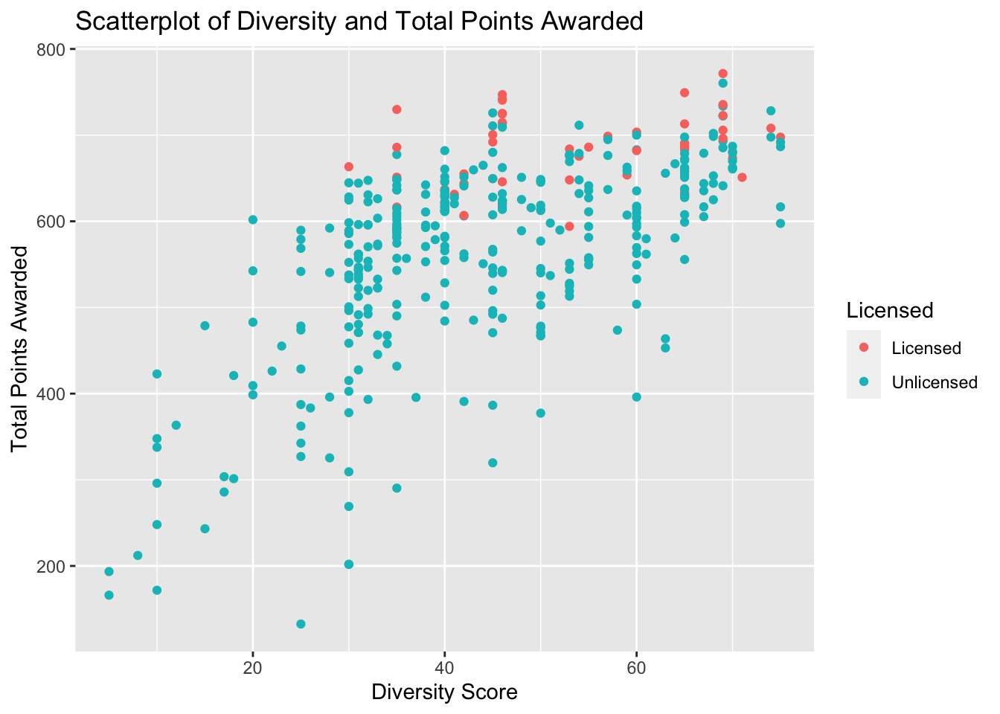
At first glance of Figure 13, I noticed that there was a significant amount of overlap between the licensing outcome when compared to diversity scores. The general correlation is not as distinct as it was when comparing the capital scores.
Figure 14
###Diversity plot with facetwrap
PA_Dispensary_License_Mutated%>%
mutate(outlier_diversity = is_outlier(diversityplan),
outlier_lab = if_else(outlier_diversity, name, NA))%>%
ggplot(aes(x=diversityplan, y=awarded, col = licensed)) +
geom_point()+
scale_color_discrete(name="Licensed")+
labs(title= "Scatterplot of Diversity and Total Points Awarded", x= "Diversity Score", y = "Total Points Awarded")+
facet_wrap(vars(licensed))+
geom_smooth()+
theme_minimal()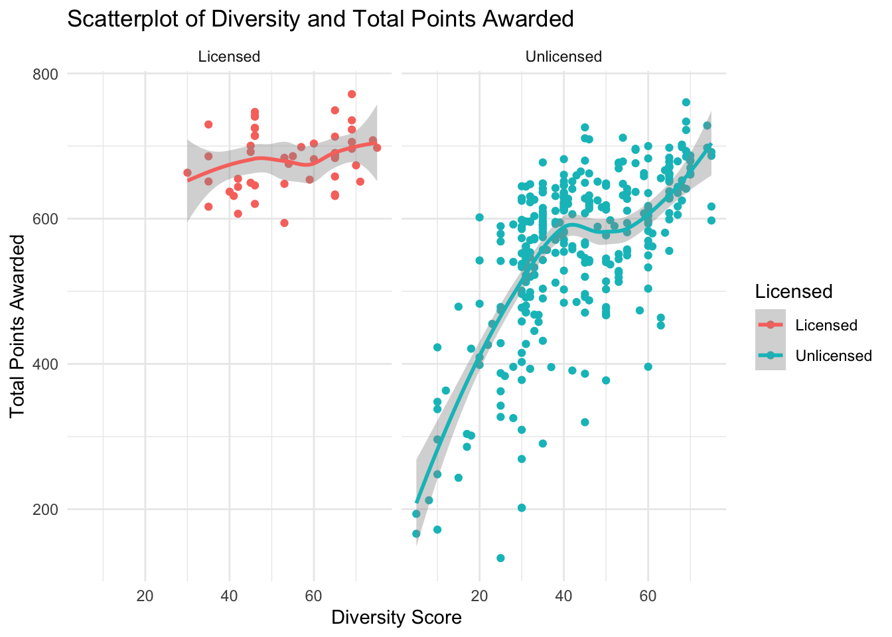
The Scatterplot in figure 14, further emphasizes the previous observation that there is a noticeably less pronounced correlation between licensing outcome and the diversity score. The actual correlation is calculated in a below correlogram.
Qualifications vs. Total Points Awarded
Figure 15
###Qualification Scatterplot
ggplot(PA_Dispensary_License_Mutated, aes(x=qualifications, y=awarded, col = licensed)) +
geom_point()+
scale_color_discrete(name="Licensed")+
labs(title= "Scatterplot of Qualification and Total Points Awarded", x= "Qualification Score", y = "Total Points Awarded")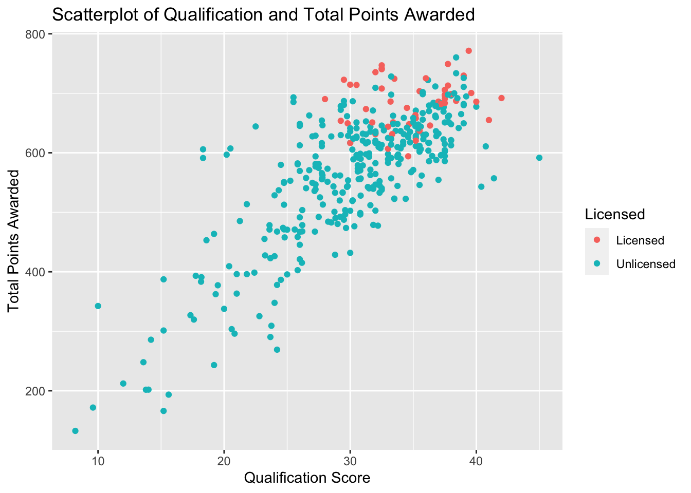
When comparing the qualification score in Figure 15, I noticed that there was a more distinguishable positive correlation of the data points. While it is not as pronounced as the correlation from the capital score, the graph is more positively correlated than the diversity score. The actual correlation is calculated in a below correlogram.
Figure 16
###Qualification Scatterplot with facet wrap
ggplot(PA_Dispensary_License_Mutated, aes(x=qualifications, y=awarded, col = licensed)) +
geom_point()+
geom_smooth()+
theme_minimal()+
scale_x_continuous(limits = c(25,40))+
scale_color_discrete(name="Licensed")+
labs(title= "Scatterplot of Qualification and Total Points Awarded", x= "Qualification Score", y = "Total Points Awarded")+
facet_wrap(vars(licensed))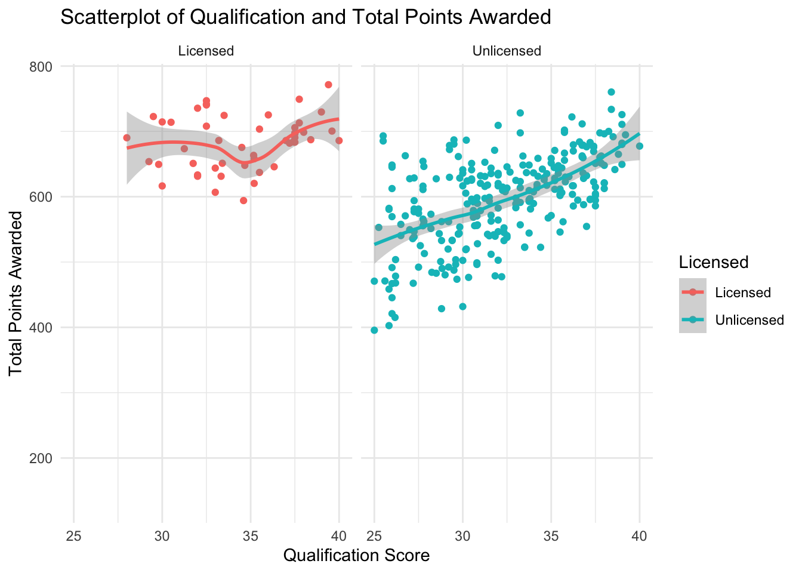
Figure 16 echoes the observations made above. There is significantly less overlap between licensing outcome. Additionally, there is a positive correlation for licensed dispensaries when observing the qualification scores.
Security Vs. Total Points Awarded
Figure 17
PA_Dispensary_License_Mutated%>%
mutate(outlier_security = is_outlier(security),
outlier_lab = if_else(outlier_security, name, NA))%>%
ggplot(aes(x=security, y=awarded, col = as.factor(licensed))) +
geom_point()+
geom_text_repel(aes(label=outlier_lab), col="red")+
theme_minimal()+
scale_color_discrete(name="Licensed")+
labs(title= "Scatterplot of Security and Total Points Awarded", x= "Security Score", y = "Total Points Awarded")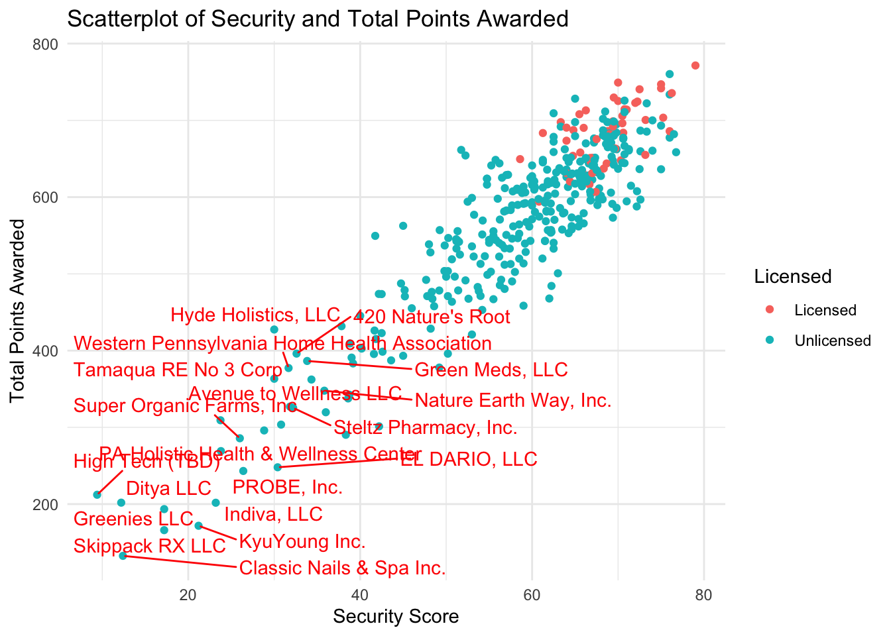
Figure 17 compares the security score and total points awarded with licensing outcome. The outliers are specified in the above Scatterplot. After reviewing the graph, it seems that security has a very strong positive correlation. The shape more closely resembles the distribution of the capital score than the other grouped factors.
Figure 18
PA_Dispensary_License_Mutated%>%
ggplot(aes(x=security, y=awarded, col = as.factor(licensed))) +
geom_point()+
geom_smooth()+
theme_minimal()+
scale_color_discrete(name="Licensed")+
labs(title= "Scatterplot of Security and Total Points Awarded", x= "Security Score", y = "Total Points Awarded")+
facet_wrap(vars(licensed))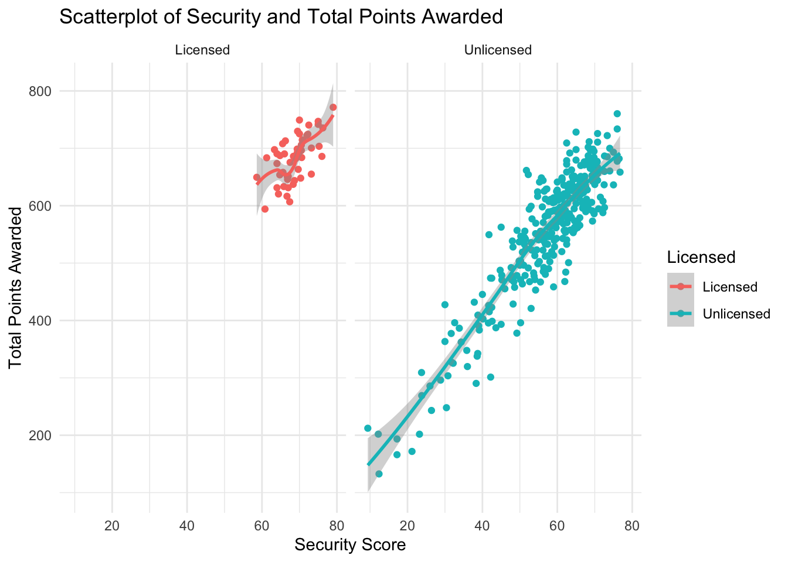
In Figure 18, I separated the two outcomes using a facet wrap. As you can see, the licensed plot seems to have the strongest correlation of the observed categories. This suggests that the security score is one of the more important scores when it comes to licensing outcomes.
###Final Look
This final correlogram provide additional visualization and the actual levels of correlation for the specified categories. In the below graph “licensed” was changed to “Lic”(Red) and “Unlicensed” was changed to “Unl”(Blue).
In addition to the correlation calculations, Figure 19 includes additional visualizations that align with the observations made above. The distributions and patterns in the additional visualizations share similar results.
Figure 19
PA_Dispensary_License_Mutated%>%
mutate(licensed = ifelse(licensed=="Unlicensed", "Unl.", "Lic."))%>%
ggpairs(., columns = 2:7,
ggplot2::aes(col = licensed))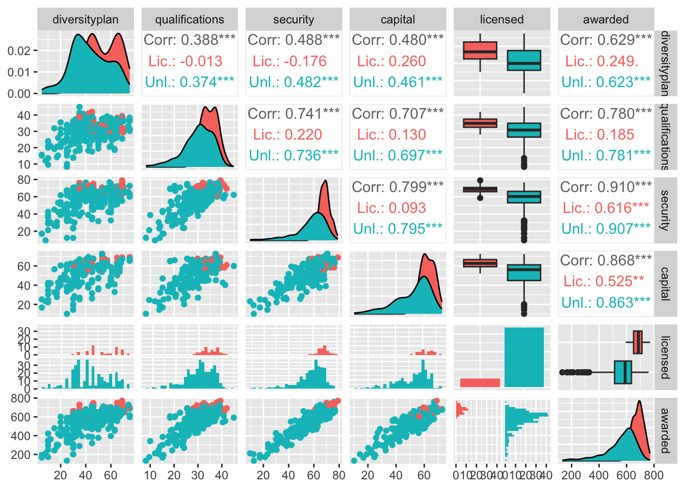
Based on Figure 19, Security score has the strongest positive correlation for both licensed and unlicensed dispensaries, followed by capital score. The security score has a very strong general correlation(.910) and a moderately strong correlation (.616) for licensed dispensaries. The capital score shares a similar result with a moderately strong licensed correlation(.525) and very strong overall correlation ( .868). It is worth noting that diversity plan has a slightly stronger licensed correlation (.249) that the qualification score(.185), but the general graph was slightly less correlated overall(.629 vs .780).
Additionally, the graph shows the correlations when compared to the other categories. However, for the purpose of this paper I focused on the awarded column.
I chose these types of visualization because they offer the clearest picture between companies that received licenses and those that did not. Also, with scatterplots, you can see if there is a cluster hovering near a specific value. Box plots provide a similar result as we compared the total scores, the category and whether or a company received a license.
Conclusion
In conclusion, I observed that the most noticeable patterns are between capital scores and security scores. However, since I did not test for statistical significance, these patterns will require further analysis. That being said, based on the above visualizations and calculations, capital and diversity score seem to have the most impact on the licensing outcome.
The impact of the diversity plan or the qualifications does not seem to produce as convincing results. I believe that tests for statistical significance would affirm this. However, the purpose of this analysis was to determine if there are any patterns between the mentioned categories. An additional statistical analysis and study is required to conclusively prove the results.
Bibliography
Hannah, Lee, 2022, “Replication Data for”Maximizing Social Equity as a Pillar of Public Administration: An Examination of Cannabis Dispensary Licensing in Pennsylvania”“, https://doi.org/10.7910/DVN/KYT5PD, Harvard Dataverse, V1; PA Dispensary License Data.tab
R Core Team (2017). R: A language and environment for statistical computing. R Foundation for Statistical Computing, Vienna, Austria. URL https://www.R-project.org/.
Wickham, H. (2021). ggplot2: elegant graphics for data analysis. R package version 3.3.5. https://cran.r-project.org/web/packages/ggplot2/index.html.
Wickham, H. (2021). Welcome to the tidyverse. R package version 1.3.1. https://cran.r-project.org/web/packages/tidyverse/index.html.